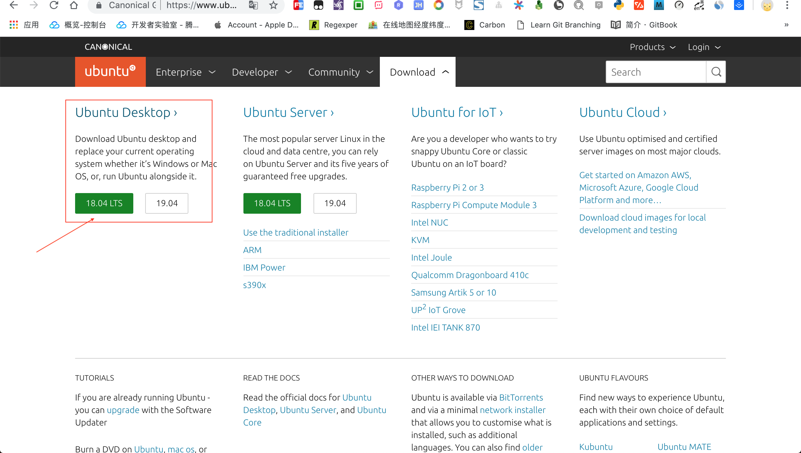
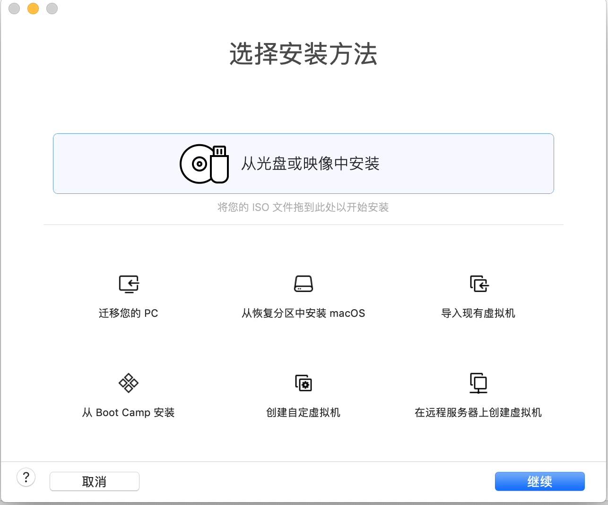
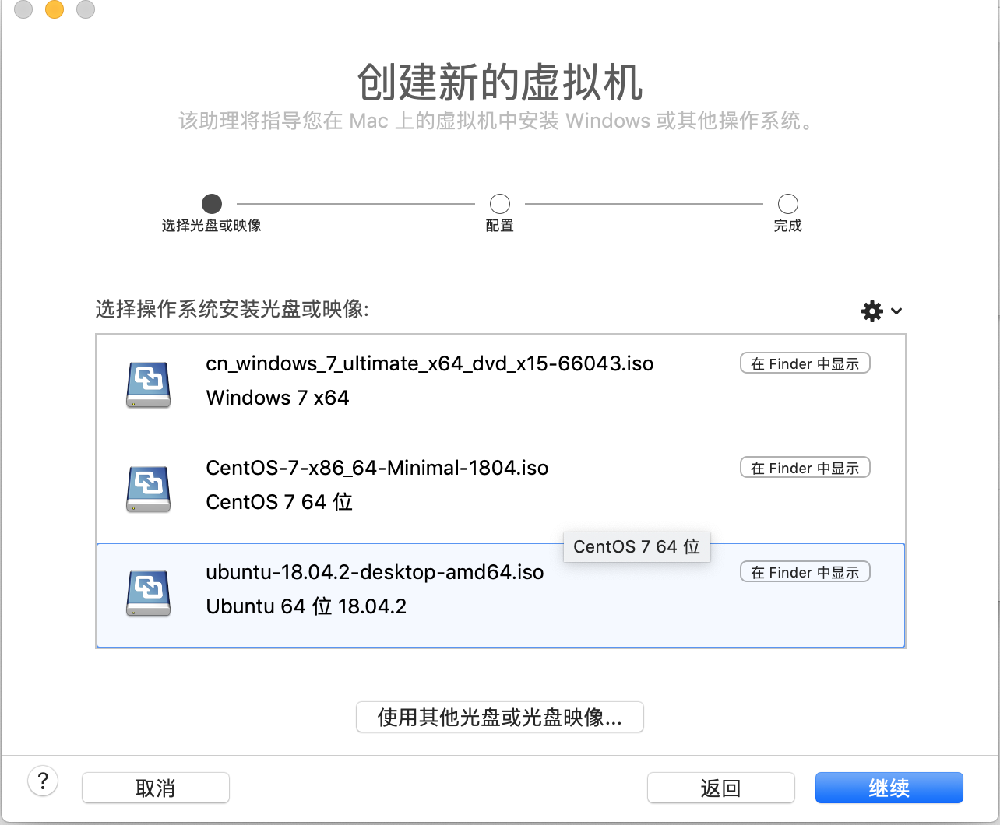
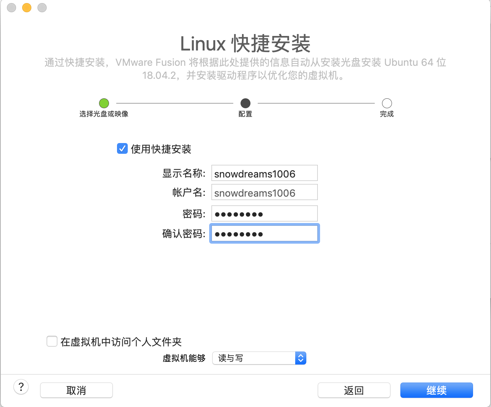
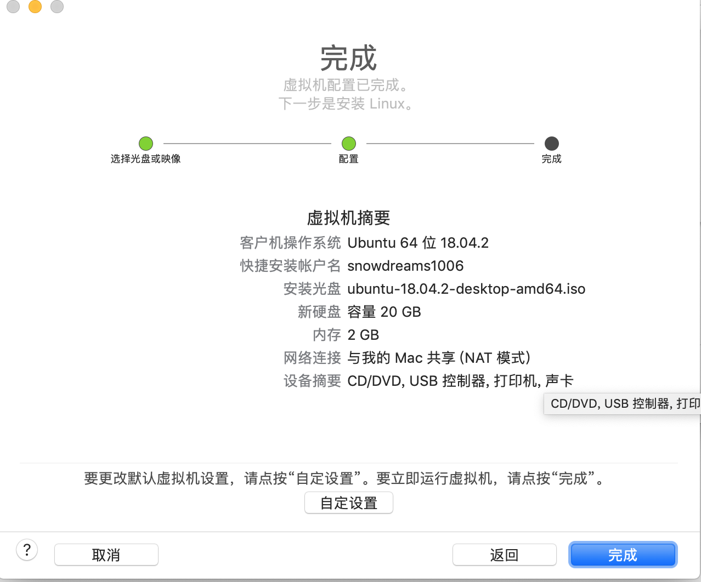
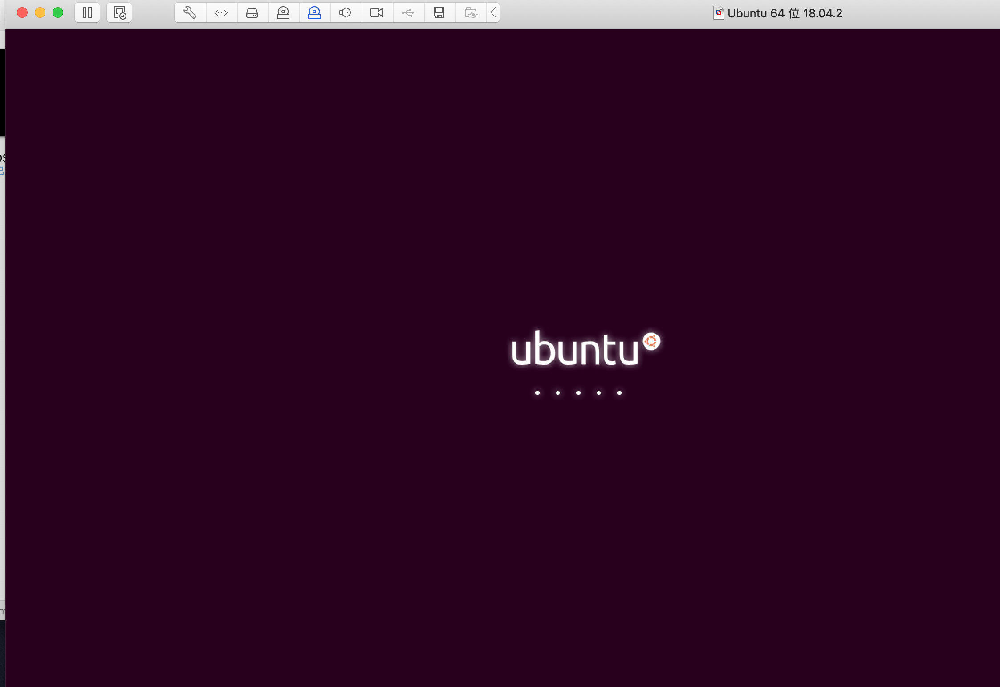
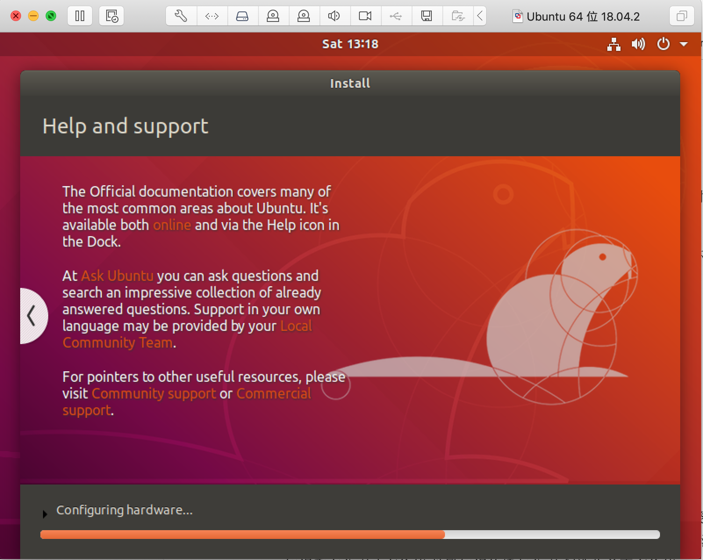
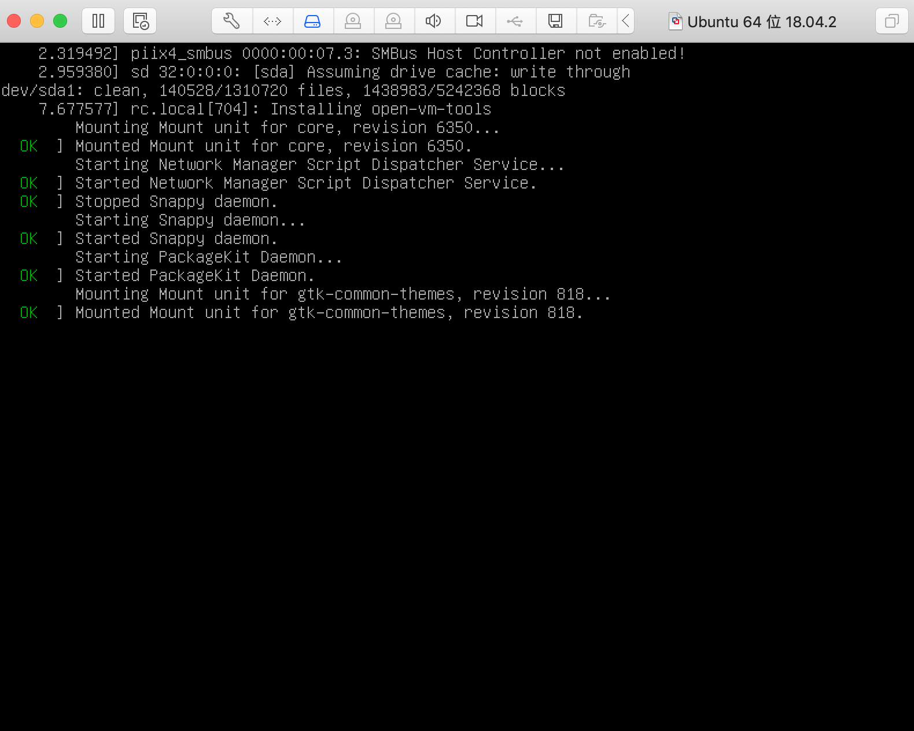
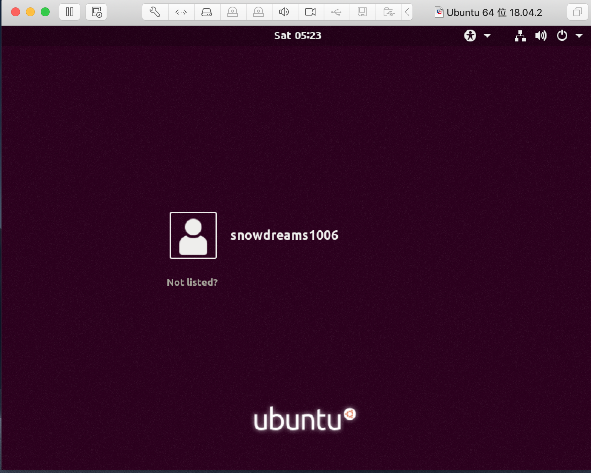
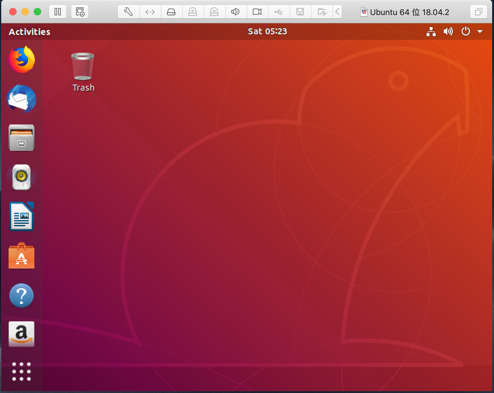

1. 给mac虚拟机装个ubantu
前文我们已经讲解了如何在 mac 系统上安装虚拟机软件,这节我们接着讲解如何利用虚拟机安装 Ubuntu 镜像.
安装镜像的大致步骤基本相同,只不过是配置项略显不同而已,如果需要安装其他系统镜像,请参考另外两篇教程.
1.1. 下载镜像
这里我们选择桌面版(Ubuntu Desktop),接着选择 LTS 长期支持版进行下载安装.

按照实际需要选择适合自己的操作系统,这里选择的是 Ubuntu18 LTS ,然后选择下载.
1.2. 配置镜像
准备好已下载的镜像文件:
ubuntu-18.04.2-desktop-amd64.iso
打开 VMware 软件,选择 文件->新建 选项开始安装镜像文件.
弹出安装配置界面,选择 从光盘或镜像中安装 选项,然后将已下载的镜像文件拖动到安装区进行识别.

识别到镜像文件后选中该文件,点击 继续 准备下一步安装.

linux 快捷安装选项中配置用户信息,点击 继续 .

确认配置信息无误后,点击 完成 ,等待镜像安装...

1.3. 安装镜像
只因在人群中看见了 Ubuntu ,便确定了你就是我要安装的操作系统.

惊鸿一瞥,容颜出现,安装进行时.

熟悉的命令行,成功只差一步.

现在输入之前配置的账号信息,开始登陆系统,见证奇迹的时刻即将来临...

终于等到你,还好我没放弃!

1.4. 小结
总体来说,mac 系统安装 Ubuntu 镜像配置比较简单,基本上按照默认配置即可.
下载镜像时文件一般比较大,需要利用专门的第三方工具下载,既可以选择下载种子链接也可以直接下载.